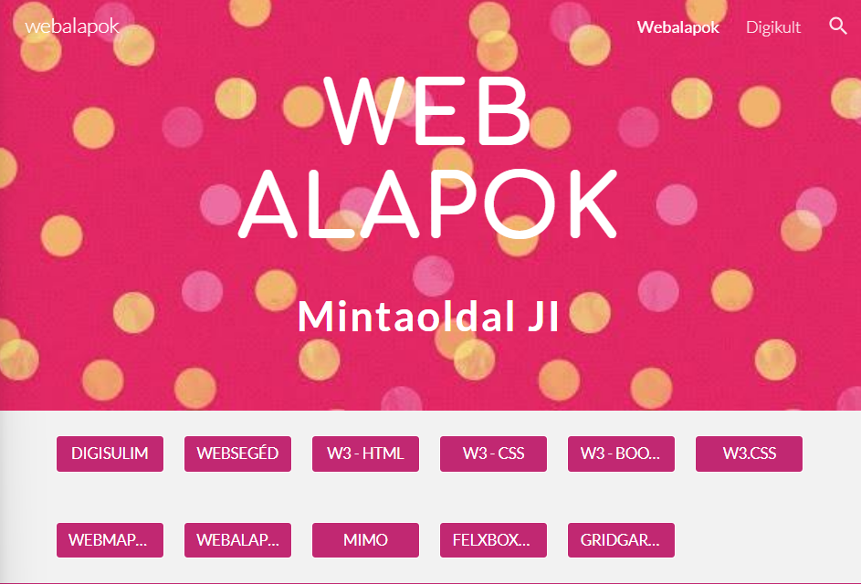
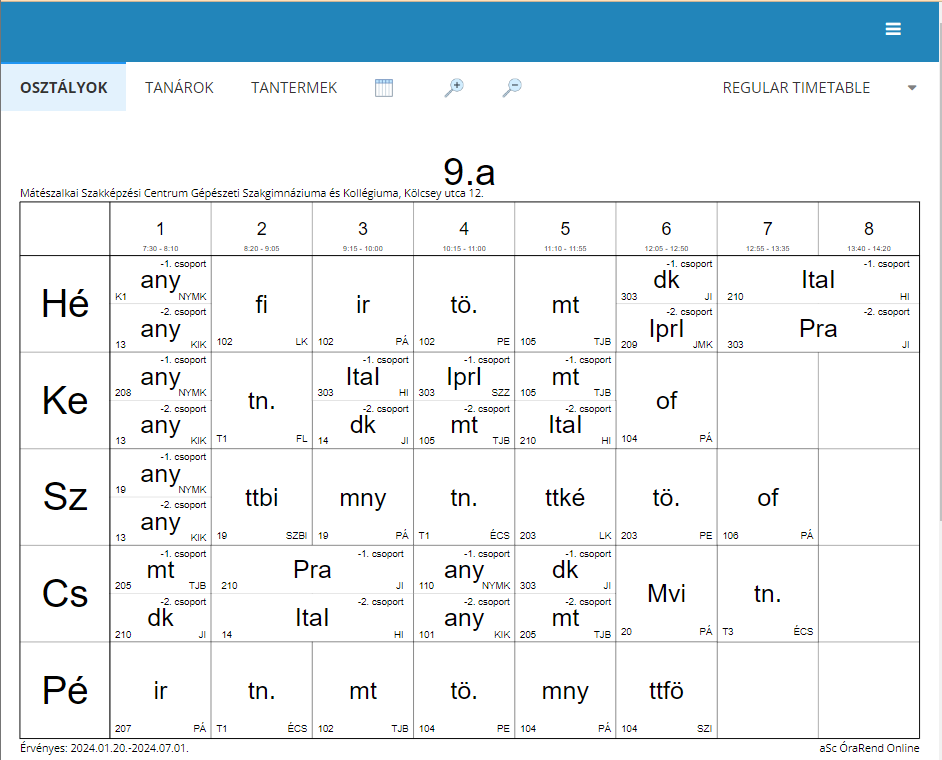
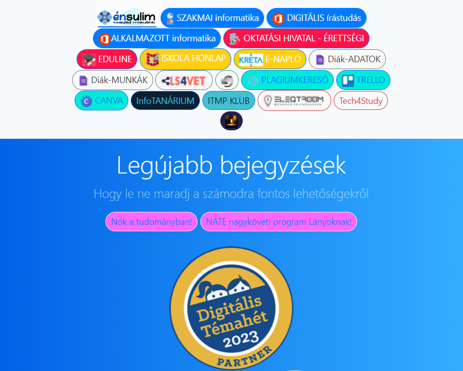

WEB alapok - saját weboldalam
A programozási gyakorlat html + css + bootstrap tudnivalóinak gyűjteménye mintafeladatokkal.
Ugrás az oldalra

Iskolai aktuális órarend
Megtalálhatod az osztályok, az oktatók és a tantermek órarendjeit naprakészen.
Ugrás az oldalra

Oktatási iránytű portál
Megtalálhatod azon fontos oldalak elérhetőségét, melyek a Digitális kultúra tantárgyhoz és az Informatikai és távközlés ágazat diákjainak nyújt linkgyűjteményt a tanulmányok során használandó tartalmakhoz, programokhoz.
Ugrás az oldalra